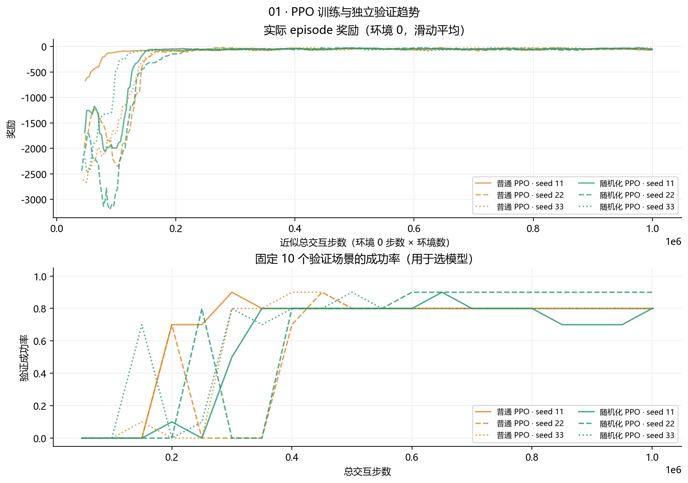
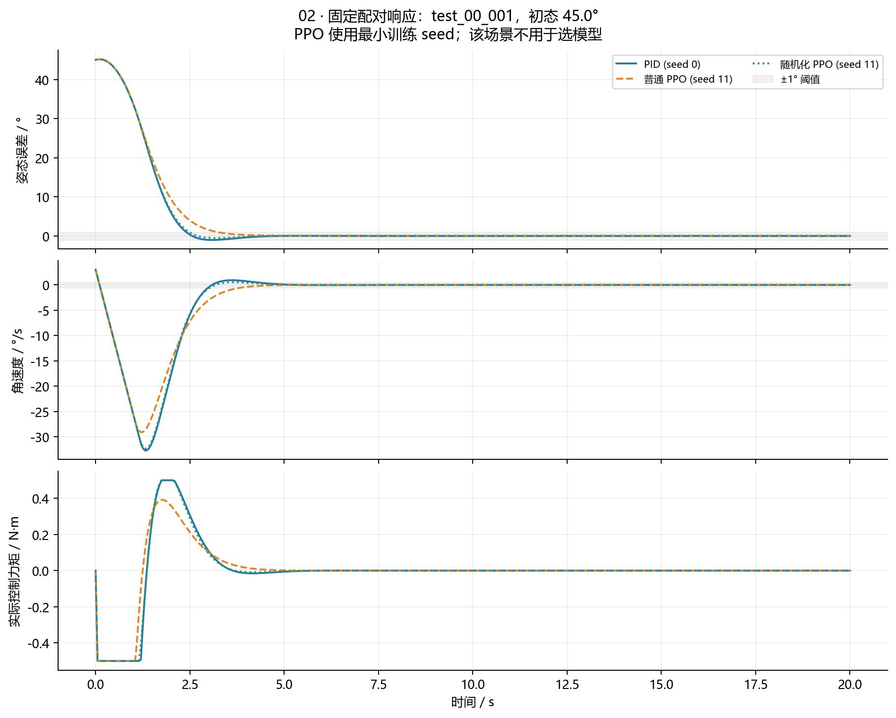
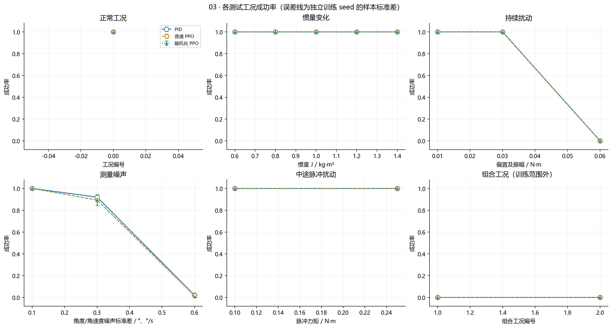
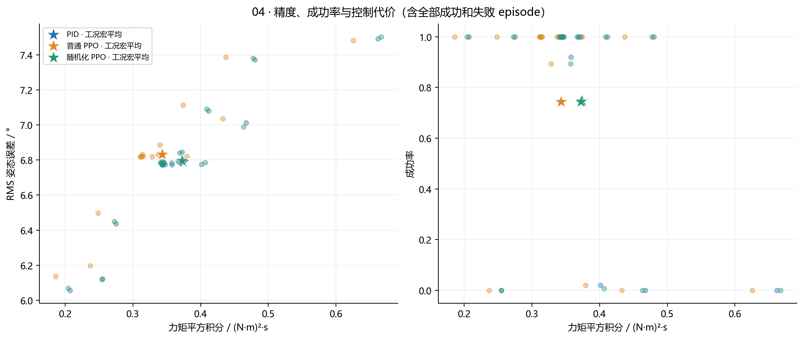
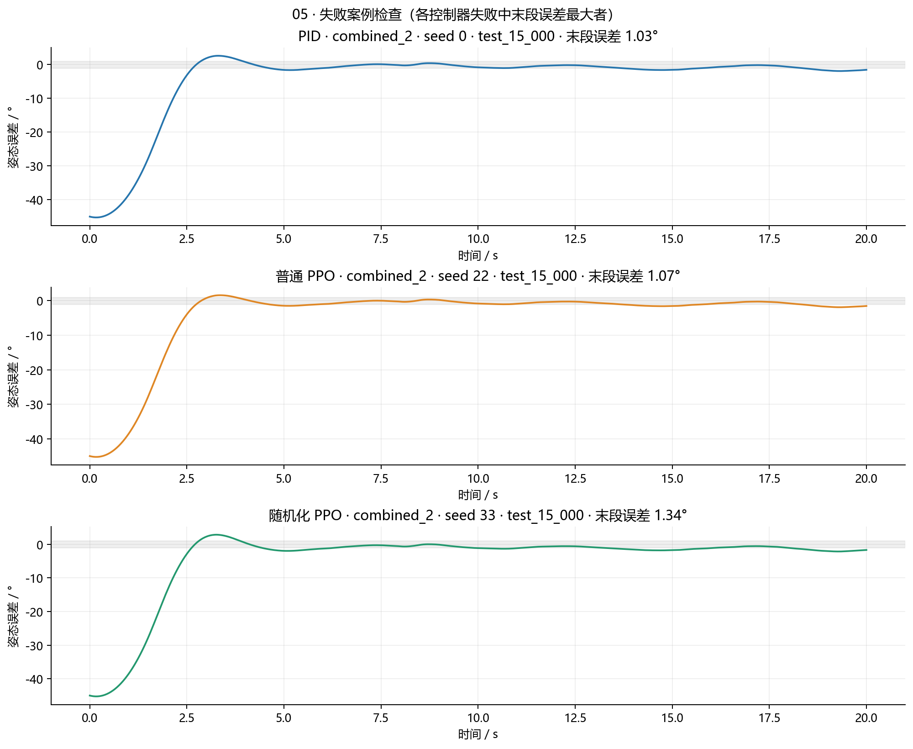
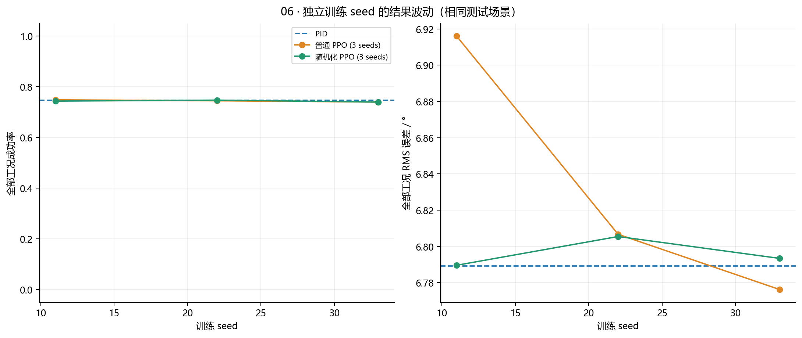
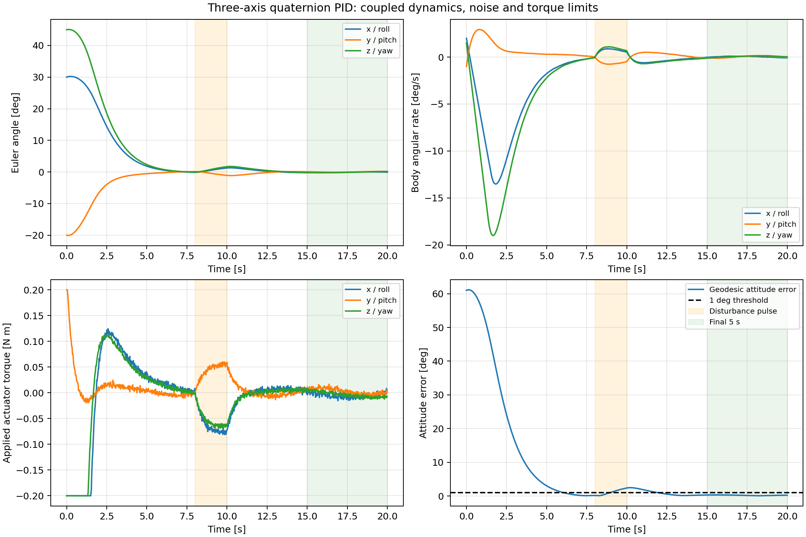

卫星姿态控制结项结果总览
PID、普通PPO与随机化PPO的同条件仿真比较。800个场景，5600个回合，6份独立训练模型。
成功：20秒仿真末5秒持续满足误差≤1°、角速度≤0.5°/s。所有数据来自保存结果，失败回合保留。学校评审及实际在轨性能不由本页面保证。
工作总说明 · 运行说明 · 技术报告 · 逐回合数据
01 工况与控制器比较
稳定时间只在成功回合上求均值；控制代价为力矩平方积分。PID没有训练种子误差线。
01_training_validation

02_paired_response

03_success_robustness

04_performance_cost

05_failure_cases

06_training_seed_variability

前一版三轴PID拓展
该目录为三轴PID演示；新增三轴强化学习对比在07。
